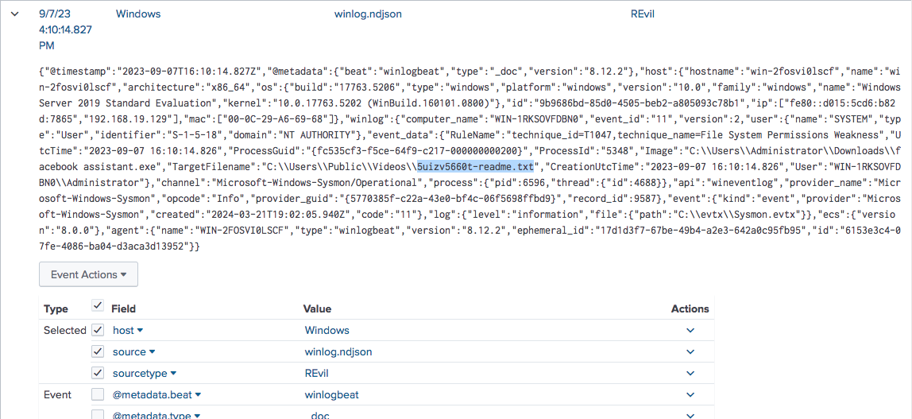
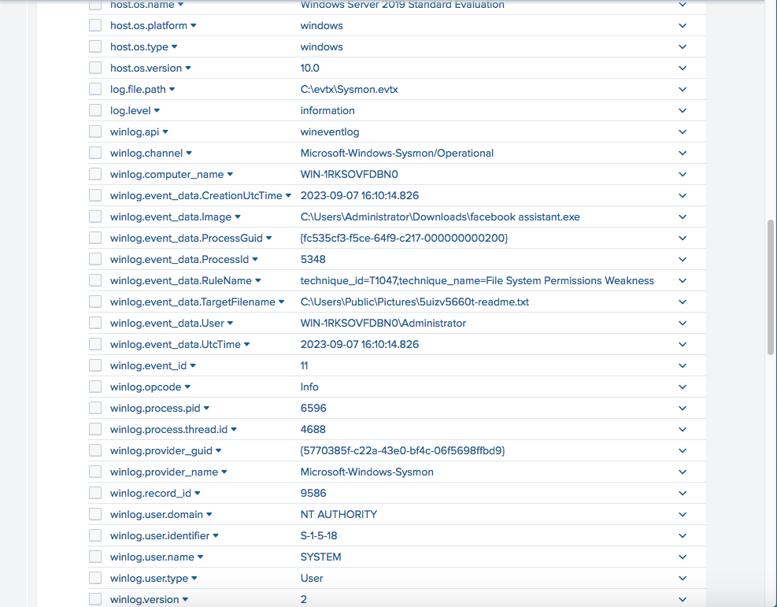
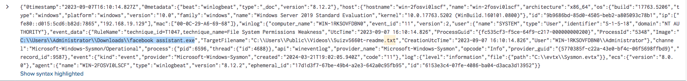
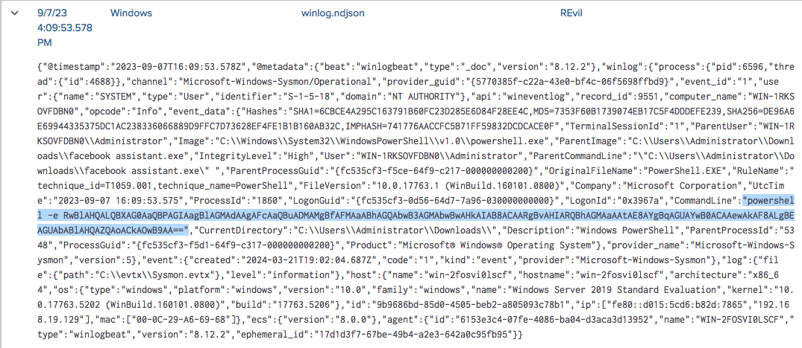
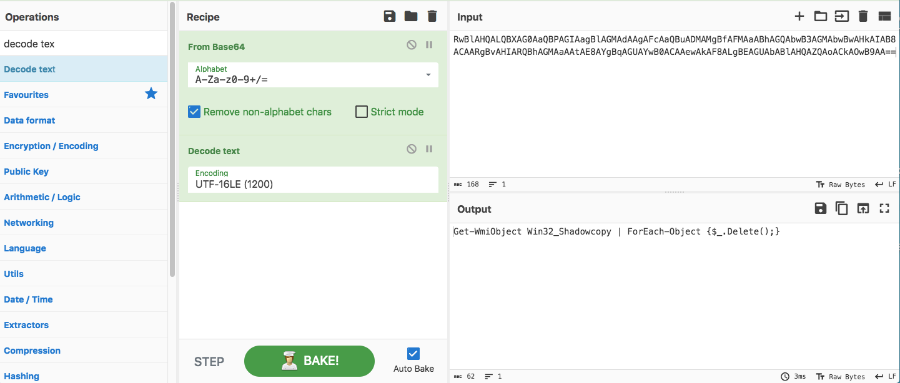
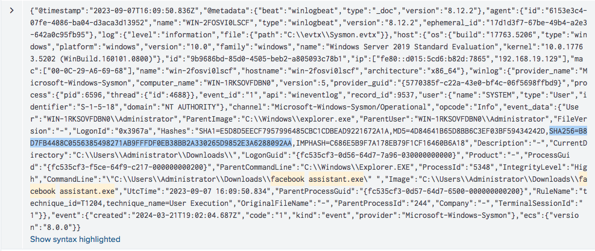
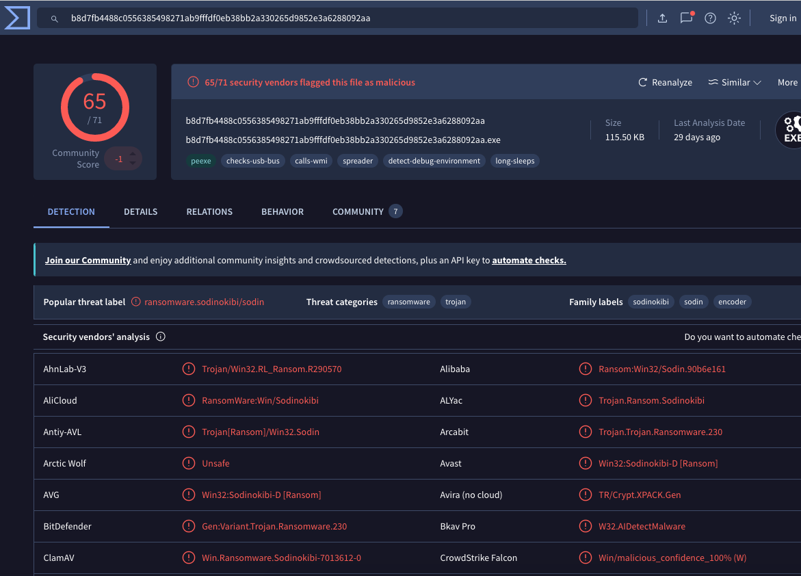
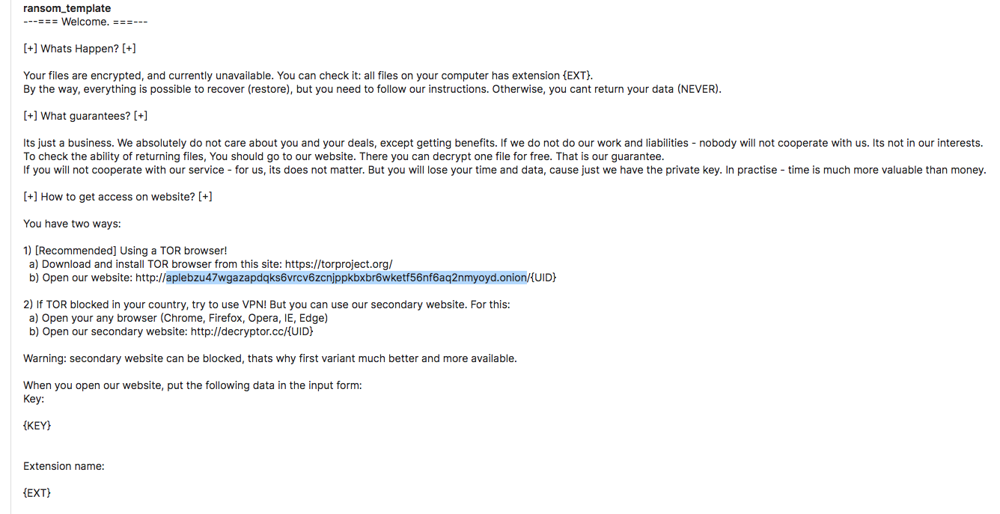

🛡️ Revil - Gold Southfield Lab
Escenario
Eres un cazador de amenazas que trabaja para una firma de consultoría de ciberseguridad. Uno de sus clientes se ha visto afectado recientemente por un ataque de ransomware que causó el cifrado de múltiples máquinas de sus empleados. Los usuarios afectados han reportado encontrarse con una nota de rescate en su escritorio y un fondo de escritorio cambiado. Se le encarga el uso de Splunk SIEM que contiene registros de eventos de Sysmon de una de las máquinas cifradas para extraer la mayor cantidad de información posible.
Preguntas
Para comenzar su investigación, puede identificar el nombre del archivo de la nota que el ransomware dejó atrás?
Para empezar, como sabemos que normalmente el ransomware deja un mensaje en archivos .txt, empecé buscando archivos con esa extensión, encontrando aproximadamente 21 eventos relacionados con el mismo archivo. Posteriormente, al inspeccionar el archivo JSON, logré visualizar un .exe muy sospechoso llamado “facebook assistant.exe”, el cual creó el archivo .txt en una carpeta pública, por lo que podría tratarse del mensaje dejado por el ransomware.

Después de identificar la nota de rescate, el siguiente paso es identificar la fuente. Cuál es el proceso ID del ransomware que probablemente está involucrado?
Después de identificar la nota de rescate, se inspeccionó el archivo JSON del evento Sysmon para identificar el proceso responsable de crear dicho archivo. Dentro del apartado “ProcessId” se encontró el valor, correspondiente al proceso sospechoso “facebook assistant.exe”, el cual probablemente está relacionado con la actividad ransomware observada en el laboratorio.

Habiendo determinado la identificación de proceso del ransomware, el siguiente paso lógico es localizar su origen. Dónde podemos encontrar el archivo ejecutable del ransomware?
Considerando los datos obtenidos del Process ID y del archivo txt, se logró identificar la ruta del ejecutable sospechoso asociado a la actividad ransomware.

Ahora que has localizado la ubicación ejecutable del ransomware, vamos a cavar más profundo. Es una táctica común para el ransomware para interrumpir los métodos de recuperación del sistema. Puedes identificar el comando que se usó para este propósito?
En el archivo JSON podemos observar que la alerta emitida por Sysmon muestra la ejecución de un comando en PowerShell. Además, el comando inicia con el parámetro “-e”, lo que indica que el contenido se encuentra codificado en Base64.

Posteriormente, el contenido codificado fue ingresado en CyberChef para descifrar el script ejecutado. Finalmente, se logró identificar un script encargado de buscar todas las instancias de la clase “Win32_Shadowcopy”, que representa las copias de sombra (instantáneas) del sistema, y posteriormente ejecutar la eliminación de cada una de ellas. Este comportamiento es comúnmente utilizado por ransomware para impedir la recuperación de archivos mediante copias de seguridad del sistema.

Mientras rastreamos los pasos del ransomware, se necesita una verificación más profunda. Puede proporcionar el hash sha256 del ejecutable del ransomware para cotej cómodo con firmas maliciosas conocidas?
Considerando que ya se tenía identificado el nombre del archivo sospechoso, se realizó un filtro basado en los eventos de creación de procesos de Sysmon utilizando event.code=1. El resultado mostró dos eventos relacionados con el ejecutable analizado.
Posteriormente, tomando como referencia el horario de ejecución, se analizó el hash correspondiente al primer evento en VirusTotal, logrando confirmar que el archivo estaba relacionado con actividad ransomware.


Queda una pieza crucial: identificar el canal de comunicación del atacante. Puede aprovechar la inteligencia de amenazas y los indicadores conocidos de Compromiso (IoCs) para identificar el dominio de la cebolla del autor de ransomware?
Ya teniendo el hash del archivo origen del ransomware, este fue analizado en la plataforma Triage para obtener más información sobre su comportamiento. A través del análisis se logró identificar la comunicación Command and Control (C2) relacionada con el malware, donde también fue posible encontrar el dominio .onion asociado al autor del ransomware.

Conclusión
Este análisis nos deja varias lecciones importantes que debemos tener en cuenta para prevenir ataques de ransomware. En primer lugar, se debe evitar descargar archivos ejecutables desde páginas no oficiales, ya que no se conoce realmente qué puede existir detrás de ellos. Además, es recomendable verificar que el hash del archivo coincida con el oficial o incluso analizar previamente el ejecutable en plataformas como VirusTotal para asegurarnos de que se trata de software legítimo.
Este tipo de ataques puede resultar crítico y potencialmente dañino tanto para la infraestructura de una empresa como para equipos personales, debido a que la información sensible podría verse comprometida, cifrada o incluso filtrada por los atacantes.